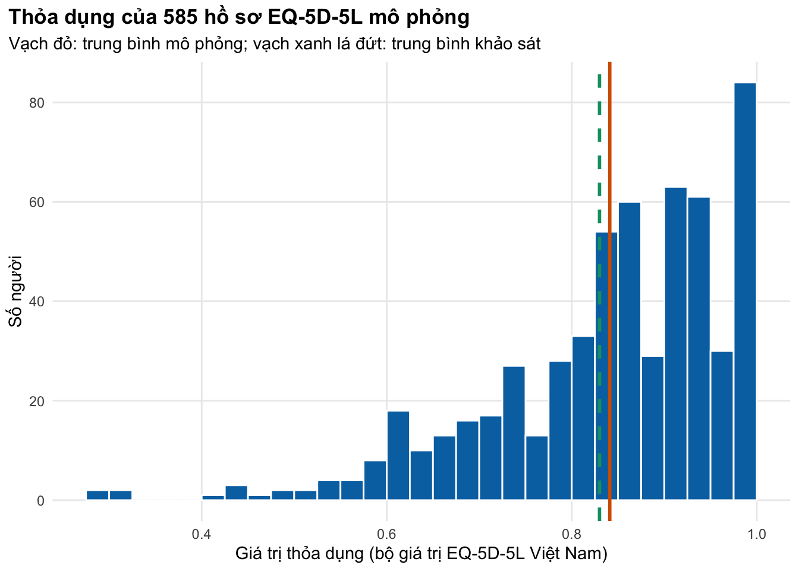
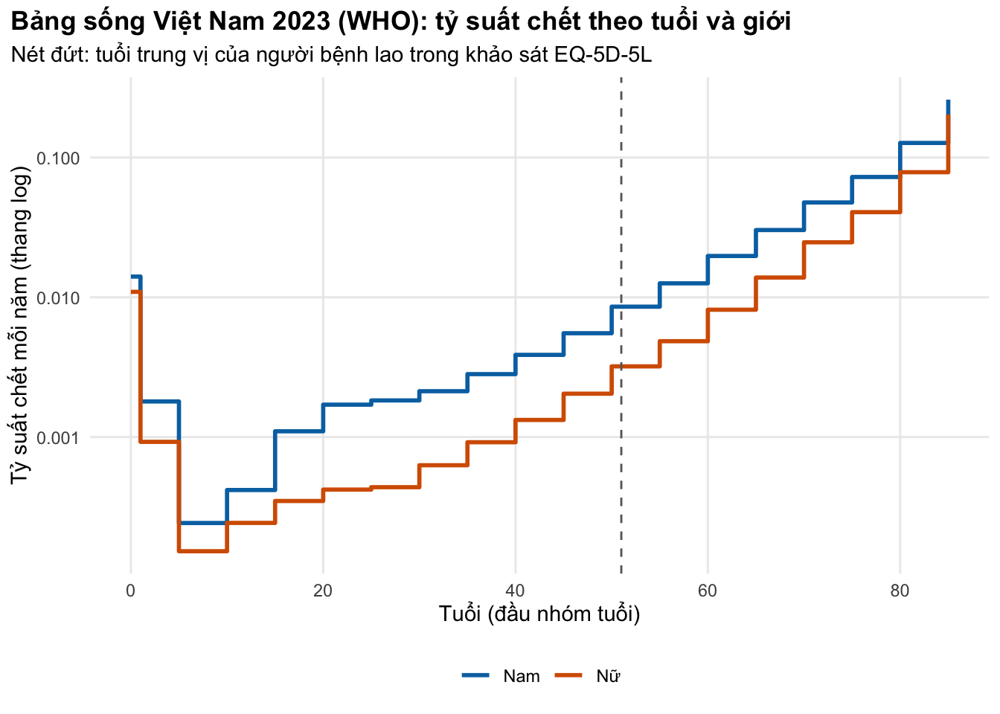

if (!isTRUE(l10n_info()[["UTF-8"]])) invisible(Sys.setlocale("LC_CTYPE", "en_US.UTF-8"))
source("../_shared/R/helpers.R")
source("../_shared/R/vn_data.R") # shared life table (vn_lifetable, vn_mx) and discount rate
source("code/model.R")
library(ggplot2)
ctx <- vn_context()
po <- read_params("params/outcomes.csv")
pg <- read_params("params/lifetable_gso2009.csv") # old GSO table, used only in Exercise 3Bài 3: Đầu vào về kết cục sức khỏe
Tính giá trị thỏa dụng bằng bộ giá trị EQ-5D-5L Việt Nam, chọn mốc nền theo tuổi, dùng trọng số bệnh tật GBD, và lấy tử vong nền từ bảng sống dùng chung của khóa học
Vì sao bạn nên quan tâm?
Một người đàn ông 51 tuổi, đúng tuổi trung vị của người bệnh lao trong khảo sát EQ-5D-5L ở Hà Nội, Hải Phòng, Đà Nẵng và TP.HCM, đến khám vì ho kéo dài. Nếu ông chết vì lao, theo bảng sống Việt Nam mà cả khóa học dùng chung, ông mất khoảng 24.5 năm sống. Nếu ông sống sót, lúc bắt đầu điều trị thỏa dụng trung bình của người bệnh là 0.83, trong khi người cùng tuổi là 0.92; qua 6 tháng điều trị, khoảng cách ấy tương đương chừng 10 ngày sống khỏe mạnh. Hai con số này góp phần quyết định phần “hiệu quả” của mọi ICER về lao, nên cách chọn mốc nền, bảng sống và thang đo (QALY hay DALY) làm đổi kết quả. Bài này giúp bạn chọn cho đúng.
Mục tiêu học tập
Sau bài này, bạn có thể:
- Chuyển hồ sơ EQ-5D-5L thành giá trị thỏa dụng (utility) bằng bộ giá trị (value set) Việt Nam, và kiểm tra hàm của mình với các giá trị đã công bố.
- Chọn giá trị thỏa dụng từ y văn và chọn mốc sức khỏe nền (baseline) theo tuổi, cùng bộ giá trị.
- Dùng trọng số bệnh tật (disability weight) GBD để tính YLD, và dùng bảng sống để tính YLL.
- Kiểm tra một bảng sống công bố, lấy tỷ suất chết nền từ
vn_mx()và đổi sang xác suất theo chu kỳ. - Nêu rõ lựa chọn bảng sống (nguồn, năm, giới; quốc gia hay tham chiếu) và nhận ra khi hai nguồn chính thức mâu thuẫn.
Ý chính
- QALY cần giá trị thỏa dụng (1 = sức khỏe hoàn hảo, 0 = tử vong, có thể âm). DALY cần trọng số bệnh tật (0 = khỏe, 1 = tương đương tử vong). Hai thang đo không đổi lẫn cho nhau được.
- Việt Nam có bộ giá trị EQ-5D-5L riêng, dạng cộng: thỏa dụng = 1 trừ tổng mức giảm của năm khía cạnh. Hàm tự viết phải tái tạo được các giá trị tác giả công bố.
- Chỉ so hoặc chia hai thỏa dụng khi cùng công cụ đo, cùng bộ giá trị và quần thể giống nhau (nguyên tắc của khóa học; ISPOR có bảng kiểm (Brazier và c.s. 2019)). Lấy 1 làm mốc nền phóng đại lợi ích; dùng chuẩn dân số cùng nhóm tuổi khi có (Ara và Brazier 2010).
- Tử vong nền (background mortality) lấy từ bảng sống dùng chung (
vn_lifetable(),vn_mx()): WHO 2023 cho Việt Nam. Không chép bảng sống vào module. - Luôn kiểm tra bảng trước khi dùng: các cột phải khớp nhau, và \(L_x \le n\,l_x\). Bảng WHO qua được kiểm tra; bảng 2009 của Tổng cục Thống kê thì không (bài tập 3).
- WHO và Cục Thống kê (trước đây là Tổng cục Thống kê) bất đồng về tuổi thọ theo giới: khoảng 2.2 năm ở nam. Đó là một phát hiện cần nêu, không phải chi tiết để bỏ qua.
Nội dung
Giá trị thỏa dụng và bộ giá trị EQ-5D-5L
EQ-5D-5L hỏi về năm khía cạnh (đi lại, tự chăm sóc, sinh hoạt thường ngày, đau/khó chịu, lo lắng/u sầu), mỗi khía cạnh năm mức từ “không có vấn đề” đến “không thể/rất nặng” (Herdman và c.s. 2011). Mỗi người trả lời cho ra một hồ sơ năm chữ số, ví dụ 12345. Hồ sơ chưa phải thỏa dụng: cần một bộ giá trị, ước lượng từ ưu tiên của dân số chung bằng các kỹ thuật như đánh đổi thời gian (time trade-off) và thí nghiệm lựa chọn rời rạc (discrete choice experiment).
Bộ giá trị EQ-5D-5L Việt Nam được xây từ 1,200 người trưởng thành đại diện cho cả nước, theo quy trình chuẩn của nhóm EuroQol và một mô hình hybrid kết hợp hai kỹ thuật trên (Mai và c.s. 2020). Giá trị thấp nhất (trạng thái 55555) là -0.5115. Mô hình có dạng cộng:
\[ u = 1 - \sum_{d=1}^{5} \delta_d(\ell_d), \qquad \delta_d(\ell) = \sum_{j=2}^{\ell} \Delta_{d,j}, \]
trong đó \(\Delta_{d,j}\) là mức giảm khi đi từ mức \(j-1\) lên mức \(j\) ở khía cạnh \(d\) (hệ số gia tăng như bảng gốc công bố), và \(\delta_d(\ell)\) là mức giảm cộng dồn ở mức \(\ell\). Trước khi có bộ giá trị trong nước, các nghiên cứu Việt Nam từng mượn bộ giá trị của Hàn Quốc, Thái Lan hoặc Trung Quốc (Mai và c.s. 2020); nay dùng bộ khác cần được lý giải và thử độ nhạy.
Thỏa dụng từ y văn và mốc nền theo tuổi
Mô hình hiếm khi có số liệu EQ-5D tự thu thập cho mọi trạng thái; hướng dẫn ISPOR giúp tìm, tổng hợp và đánh giá thỏa dụng từ y văn (Brazier và c.s. 2019). Ở người bệnh lao, khảo sát dọc 585 người tại bốn thành phố, dùng bộ giá trị Việt Nam, cho thỏa dụng trung bình 0.83 lúc bắt đầu điều trị và 0.90 sau điều trị (Vo và c.s. 2025). Bài báo công bố cả phân bố năm mức của từng khía cạnh, nên ta mô phỏng được câu trả lời từ số liệu thật.
Mốc nền. Tổn thất QALY của một đợt bệnh bằng chênh lệch giữa thỏa dụng “nếu không mắc bệnh” và thỏa dụng khi mắc; lấy 1 làm mốc là bỏ qua việc người cùng tuổi vốn không hoàn toàn khỏe (Ara và Brazier 2010). Số liệu chuẩn quốc gia, tính bằng bộ giá trị Việt Nam, cho 0.94 ở mọi tuổi và giảm dần theo tuổi: 0.92 ở nhóm 45–54, 0.91 ở 55–64 và 0.89 từ 65 tuổi (Mai và c.s. 2022). Khảo sát Hà Nội cho 0.91 nhưng tính bằng bộ giá trị Thái Lan (Nguyen và c.s. 2017); khảo sát người bệnh lao lấy đúng số này làm mốc so sánh, nên chia 0.83 cho nó là chia hai số của hai bộ giá trị. Điều chỉnh nhân (multiplicative) giữ tỷ số giữa thỏa dụng khi bệnh và mốc của cùng quần thể rồi áp lên mốc của quần thể mô hình; tỷ số chỉ có nghĩa khi hai số cùng bộ giá trị.
Trọng số bệnh tật và DALY
DALY là tổng số năm sống mất do tử vong sớm (YLL) và số năm sống với bệnh tật (YLD) (Murray 1994):
\[ \text{DALY} = \underbrace{e(a)}_{\text{YLL}} + \underbrace{\text{DW} \times L}_{\text{YLD}}, \]
với \(e(a)\) là kỳ vọng sống còn lại ở tuổi tử vong \(a\), DW là trọng số bệnh tật và \(L\) là thời gian sống với bệnh. Khi chiết khấu với tỷ lệ \(r\) liên tục, một khoảng thời gian \(T\) được thay bằng \((1 - e^{-\rho T})/\rho\) với \(\rho = \ln(1+r)\).
Trọng số bệnh tật được ước lượng trong các nghiên cứu Gánh nặng bệnh tật toàn cầu (GBD) (Salomon và c.s. 2015; GBD 2019 Diseases and Injuries Collaborators 2020). Với lao không nhiễm HIV, trọng số GBD 2013 và 2019 là 0.333 (khoảng bất định 0.224–0.454); với lao đồng nhiễm HIV là 0.408 (Tomeny và c.s. 2024). Chưa có trọng số riêng cho MDR/RR-TB, nên dùng 0.333 cho một đợt lao kháng thuốc là giả định cần thử độ nhạy. QALY và DALY có thể cho kết luận khác nhau ở một số bài toán (Augustovski và c.s. 2018).
Bảng sống cho YLL. Bảng quốc gia cho kỳ vọng sống còn lại thực tế trong nước. Bảng sống tham chiếu (reference life table) là một bảng chung cho mọi nước, nên cùng một ca tử vong ở cùng tuổi mất cùng số năm ở mọi nơi; hướng dẫn tính DALY cho COVID-19 nêu cả hai và cho rằng bảng khát vọng thích hợp hơn khi cần so sánh quốc tế (Wyper và c.s. 2021). Lựa chọn này đổi YLL đáng kể: ở Nepal, YLL thấp hơn 27% ở nam và 21% ở nữ khi dùng bảng quốc gia thay bảng sống tham chiếu GBD 2021 (Tonnelier và c.s. 2026). Phần thực hành chỉ dùng bảng quốc gia.
Bảng sống dùng chung của khóa học
Bảng sống rút gọn đi từ tỷ suất chết theo nhóm tuổi \(_nM_x\) đến kỳ vọng sống \(e_x\):
\[ {}_nq_x = \frac{n\,{}_nM_x}{1 + (n - {}_na_x)\,{}_nM_x}, \quad l_{x+n} = l_x (1 - {}_nq_x), \quad {}_nL_x = n\, l_{x+n} + {}_na_x\, {}_nd_x, \quad e_x = \frac{\sum_{y \ge x} {}_nL_y}{l_x}, \]
với \(_na_x\) là số năm sống trung bình trong khoảng của người chết trong khoảng đó. Nhóm tuổi cuối mở, nên \(L = l/M\).
Khóa học dùng một bảng sống cho mọi module: bảng của Tổ chức Y tế Thế giới cho Việt Nam năm 2023, theo hai giới và từng giới, lưu ở _shared/data/vn_lifetable.csv (World Health Organization 2026). Hàm vn_lifetable() đọc bảng; vn_mx() trả tỷ suất chết năm ở một tuổi bất kỳ. Khi WHO công bố bảng mới, chỉ cần dựng lại tệp đó, mọi mô hình cập nhật theo. Trong mô hình chu kỳ tháng, tỷ suất năm \(M\) đổi thành xác suất tháng bằng \(p = 1 - e^{-M/12}\), như M02 Bài 2.
Hai nguồn chính thức bất đồng. Tuổi thọ khi sinh hai giới của WHO (2023) và của Cục Thống kê (2025) (Cục Thống kê (Bộ Tài chính) 2026) gần nhau, nhưng theo giới thì không: Cục Thống kê cho nam cao hơn 2.2 năm và nữ thấp hơn 1.2 năm. Hai cơ quan dùng số liệu, phương pháp và năm khác nhau; ta chưa biết bên nào đúng hơn. Với mô hình lao, nơi phần lớn người bệnh là nam, chênh lệch này đi thẳng vào YLL, nên hãy nêu nó trong báo cáo và thử độ nhạy.
Thực hành
Nạp bảng tham số kết cục, các giá trị dùng chung và bảng sống cũ dùng cho bài tập.
Dựng ma trận mức giảm cộng dồn từ các hệ số gia tăng, rồi tính lại bảy trạng thái tác giả đã công bố. Kiểm tra: chênh lệch dưới 0.0005 (các hệ số công bố đã làm tròn bốn chữ số) và mức giảm không giảm khi mức độ tăng.
# Cumulative decrements per dimension and level (level 1 = no problems = 0)
D <- eq5d_decrements(po)
round(D, 4) 1 2 3 4 5
mo 0 0.0692 0.0785 0.2064 0.3761
sc 0 0.0428 0.0460 0.1472 0.2313
ua 0 0.0464 0.0587 0.1735 0.2989
pd 0 0.0839 0.1521 0.2700 0.3665
ad 0 0.0638 0.1127 0.1715 0.2390# Reproduce the values the authors published for a few health states
chk_states <- c("12111", "11211", "11112", "21111", "11121", "12345", "55555")
chk <- data.frame(state = chk_states,
published = unlist(po[paste0("eq_chk_", chk_states)]),
computed = eq5d_value(chk_states, D))
chk$diff <- chk$computed - chk$published
chk state published computed diff
eq_chk_12111 12111 0.9573 0.9572 -1e-04
eq_chk_11211 11211 0.9536 0.9536 0e+00
eq_chk_11112 11112 0.9362 0.9362 0e+00
eq_chk_21111 21111 0.9308 0.9308 0e+00
eq_chk_11121 11121 0.9161 0.9161 0e+00
eq_chk_12345 12345 0.3897 0.3895 -2e-04
eq_chk_55555 55555 -0.5115 -0.5118 -3e-04# Published increments are rounded to 4 decimals, so expect differences below 0.0005
stopifnot(all(abs(chk$diff) < 5e-4), all(apply(D, 1, diff) >= 0))
# Why not draw the 20 increments independently from normal(value, SE)? The published SEs are
# large next to some increments, so a draw can make a worse level score higher (negative increment).
tabo <- attr(po, "table")
inc <- tabo[grepl("^eq_(mo|sc|ua|pd|ad)_[2-5]$", tabo$name), ]
p_neg <- setNames(pnorm(0, inc$value, inc$dist_p2), inc$name)
p_any_neg <- 1 - prod(1 - p_neg)
round(sort(p_neg, decreasing = TRUE)[1:3], 3)eq_sc_3 eq_mo_3 eq_ua_3
0.355 0.143 0.064 p_any_neg[1] 0.4825094Chênh lệch lớn nhất là 0.0003, đúng cỡ sai số làm tròn. Nếu hàm của bạn lệch hàng phần trăm, gần như chắc chắn bạn đã cộng nhầm hệ số gia tăng thành hệ số cộng dồn hoặc ngược lại.
Lưu ý về PSA. Không nên rút 20 hệ số này độc lập từ phân phối chuẩn quanh giá trị công bố: sai số chuẩn lớn so với một số hệ số (ví dụ eq_sc_3: xác suất rút ra giá trị âm là 35%) và bài báo không công bố ma trận hiệp phương sai. Rút độc lập cho 48% bộ giá trị có ít nhất một hệ số âm. Vì thế bảng tham số giữ các hệ số cố định; độ bất định nên đặt ở thỏa dụng trung bình của từng trạng thái bệnh.
Mô phỏng câu trả lời EQ-5D-5L cho 585 người bệnh: mức của từng khía cạnh rút từ phân bố năm mức mà khảo sát người bệnh lao công bố lúc bắt đầu điều trị (Vo và c.s. 2025). Kiểm tra: tỷ lệ có vấn đề trong mẫu mô phỏng gần với khảo sát.
# Simulated EQ-5D-5L answers for a cohort the size of the Vietnamese TB survey. Each dimension's
# level is drawn from the level shares the survey published at the start of treatment.
set.seed(909)
shares <- eq5d_level_shares(po, po$n_vo)
round(shares, 3) 1 2 3 4 5
mo 0.696 0.226 0.026 0.048 0.005
sc 0.904 0.070 0.009 0.012 0.005
ua 0.662 0.219 0.038 0.044 0.038
pd 0.462 0.388 0.074 0.072 0.005
ad 0.650 0.217 0.058 0.072 0.003lv <- simulate_eq5d(po$n_vo, shares)
u_sim <- eq5d_value(lv, D)
sim_tab <- data.frame(
n = length(u_sim), mean_utility = mean(u_sim),
share_full_health = mean(u_sim == 1), share_negative = mean(u_sim < 0),
published_mean = po$u_tb_start
)
sim_tab n mean_utility share_full_health share_negative published_mean
1 585 0.8411056 0.1435897 0 0.83# Check: simulated shares with any problem are close to the survey (Monte Carlo noise only)
round(rbind(survey = 1 - shares[, 1], simulated = colMeans(lv > 1)), 3) mo sc ua pd ad
survey 0.304 0.096 0.338 0.538 0.350
simulated 0.313 0.068 0.364 0.509 0.333stopifnot(all(u_sim <= 1), all(abs(colMeans(lv > 1) - (1 - shares[, 1])) < 0.06))
# Independence check: the survey found 11111 in 28.9% at baseline; independent draws give the product
p_11111_indep <- prod(shares[, 1])
c(survey = po$share_11111_tb, independent = p_11111_indep, simulated = sim_tab$share_full_health) survey independent simulated
0.2890000 0.1247754 0.1435897 stopifnot(p_11111_indep < po$share_11111_tb) # independence understates "no problems at all"
sim_gap <- sim_tab$mean_utility - po$u_tb_startThỏa dụng trung bình của mẫu mô phỏng là 0.841, cao hơn giá trị công bố 0.83 là 0.011. Mô phỏng giả định năm khía cạnh độc lập, và giả định đó sai rõ: khảo sát thấy 28.9% người trả lời 11111, còn rút độc lập chỉ cho 12.5% (mô phỏng: 14.4%). Ở người bệnh thật, đau, mệt và lo lắng đi cùng nhau, nên người “không có vấn đề gì” nhiều hơn và người có vấn đề thì có nhiều vấn đề cùng lúc. Khi cần hồ sơ đầy đủ, hãy xin số liệu cá nhân thay vì mô phỏng từ phân bố biên.
Vẽ phân bố thỏa dụng của mẫu mô phỏng. Kiểm tra bằng mắt: vạch đỏ (mô phỏng) gần vạch xanh lá (khảo sát), và có một cột ở 1 (trạng thái 11111).
fig_u <- ggplot(data.frame(u = u_sim), aes(u)) +
geom_histogram(binwidth = 0.025, fill = pal_course[1], colour = "white", boundary = 1) +
geom_vline(xintercept = mean(u_sim), colour = pal_course[2], linewidth = 1) +
geom_vline(xintercept = po$u_tb_start, colour = pal_course[3], linewidth = 1, linetype = "dashed") +
labs(x = "Giá trị thỏa dụng (bộ giá trị EQ-5D-5L Việt Nam)", y = "Số người",
title = paste0("Thỏa dụng của ", fmt_num(po$n_vo), " hồ sơ EQ-5D-5L mô phỏng"),
subtitle = "Vạch đỏ: trung bình mô phỏng; vạch xanh lá đứt: trung bình khảo sát") +
theme_course()
save_fig(fig_u, "l03-utility-sim.png")
Tính tổn thất QALY của một đợt bệnh dài 0.5 năm (khoảng 24 tuần điều trị BPaLM (Nyang’wa và c.s. 2022)) với bốn mốc nền. Cột loss_flat áp thỏa dụng lúc bắt đầu lên cả đợt; cột loss_path dùng trung bình của đường đi tuyến tính đến thỏa dụng sau điều trị. Kiểm tra: loss_path nhỏ hơn loss_flat, và mốc càng cao tổn thất càng lớn.
# QALY loss of one treated TB episode depends on which "healthy" baseline you subtract from.
# The survey's median age is 51, so the age-matched national norm (45-54) is the natural baseline.
baselines <- c("Sức khỏe hoàn hảo" = 1,
"Chuẩn quốc gia, mọi tuổi (Mai 2022)" = po$u_norm_mai,
"Chuẩn quốc gia, 45–54 tuổi (Mai 2022)" = po$u_norm_45_54,
"Dân số Hà Nội, bộ giá trị Thái Lan (Nguyen 2017)" = po$u_norm_hanoi)
# During treatment utility moves from the start value to the post-treatment value:
# a straight line gives the episode average. The flat version uses the start value throughout.
u_episode <- (po$u_tb_start + po$u_tb_post) / 2
b_vals <- unname(baselines)
qaly_loss <- data.frame(baseline = names(baselines), u_baseline = b_vals,
loss_flat = (b_vals - po$u_tb_start) * po$dur_episode,
loss_path = (b_vals - u_episode) * po$dur_episode)
qaly_loss baseline u_baseline loss_flat
1 Sức khỏe hoàn hảo 1.00 0.085
2 Chuẩn quốc gia, mọi tuổi (Mai 2022) 0.94 0.055
3 Chuẩn quốc gia, 45–54 tuổi (Mai 2022) 0.92 0.045
4 Dân số Hà Nội, bộ giá trị Thái Lan (Nguyen 2017) 0.91 0.040
loss_path
1 0.0675
2 0.0375
3 0.0275
4 0.0225stopifnot(all(qaly_loss$loss_path < qaly_loss$loss_flat), all(diff(qaly_loss$loss_path) <= 0))
loss_days_age <- qaly_loss$loss_path[3] * 365 # in days of full health
# Multiplicative transfer keeps the ratio of two utilities that share ONE value set.
# Same value set (Vietnamese), age-matched baseline, moved to people aged 65+:
u_rel_same <- utility_relative(po$u_tb_start, po$u_norm_45_54, po$u_norm_65plus)
# Mismatch: dividing the Vietnamese-value-set utility by a Thai-value-set baseline
u_rel_mixed <- utility_relative(po$u_tb_start, po$u_norm_hanoi, po$u_norm_65plus)
c(same_value_set = u_rel_same, mixed_value_sets = u_rel_mixed, error = u_rel_mixed - u_rel_same) same_value_set mixed_value_sets error
0.802934783 0.811758242 0.008823459 Lấy 1 làm mốc cho tổn thất 0.0675 QALY, gấp 2.5 lần khi lấy mốc cùng tuổi 0.92 (0.0275 QALY, khoảng 10 ngày sống khỏe mạnh); ngay cả mốc quốc gia mọi tuổi cũng làm tổn thất lớn thêm 36%. Về điều chỉnh nhân, chuyển thỏa dụng của người bệnh sang người từ 65 tuổi (mốc 0.89): cùng bộ giá trị cho 0.803; chia nhầm cho mốc Thái Lan cho 0.812, lệch 0.009.
Bây giờ đến bảng sống dùng chung. Nạp ba bảng (hai giới, nam, nữ) và kiểm tra trước khi dùng: số năm sống trung bình của người chết trong mỗi nhóm, suy ra từ chính cặp \(M_x\), \(q_x\) của WHO, phải nằm giữa 0 và độ rộng nhóm; dựng lại bảng từ \(M_x\) phải trả lại đúng \(q_x\). Kiểm tra: cả hai điều kiện đúng, và tuổi thọ dựng lại lệch WHO dưới nửa năm.
# The course life table: WHO Global Health Observatory, Viet Nam 2023, abridged, by sex.
lt_who <- list(both = vn_lifetable("both"), male = vn_lifetable("male"), female = vn_lifetable("female"))
head(lt_who$both[, c("age", "age_width", "mx", "qx", "ex")], 4) age age_width mx qx ex
1 0 1 0.012584942 0.012443996 74.31004
2 1 4 0.001383372 0.005515178 74.24515
3 5 5 0.000198837 0.000993689 70.64802
4 10 5 0.000332251 0.001659876 65.71581# Check a published table before using it. Step 1: the average years lived by those who die in
# each group, implied by WHO's own (mx, qx) pair. It must lie between 0 and the group width.
ax_who <- lapply(lt_who, function(t) implied_ax(t$age, t$mx, t$qx))
round(ax_who$both[1:5], 2)[1] 0.10 1.60 2.49 2.50 2.50stopifnot(all(vapply(ax_who, function(a) all(a[-19] > 0 & a[-19] < c(1, 4, rep(5, 16))), logical(1))))
# Step 2: rebuild the table from mx with those a(x). qx must come back exactly; e(x) may differ
# only through the open 85+ group, where our L = l / M is a simplification.
rebuilt <- lapply(names(lt_who), function(s) {
t <- lt_who[[s]]
life_table(t$age, t$mx, ax = ax_who[[s]])
})
names(rebuilt) <- names(lt_who)
stopifnot(all(vapply(names(lt_who), function(s)
max(abs(rebuilt[[s]]$qx[-19] / lt_who[[s]]$qx[-19] - 1)) < 1e-8, logical(1))))
e0_check <- data.frame(sex = c("Hai giới", "Nam", "Nữ"),
who_published = vapply(lt_who, function(t) t$ex[1], numeric(1)),
rebuilt = vapply(rebuilt, function(t) t$ex[1], numeric(1)),
gso_2025 = c(ctx$life_expectancy_birth, ctx$life_expectancy_birth_male,
ctx$life_expectancy_birth_female))
e0_check$rebuilt_minus_who <- e0_check$rebuilt - e0_check$who_published
e0_check$gso_minus_who <- e0_check$gso_2025 - e0_check$who_published
e0_check sex who_published rebuilt gso_2025 rebuilt_minus_who gso_minus_who
both Hai giới 74.31004 74.36232 74.7 0.05227175 0.3899564
male Nam 70.13150 70.14528 72.3 0.01378379 2.1685005
female Nữ 78.46587 78.55881 77.3 0.09294126 -1.1658703stopifnot(all(abs(e0_check$rebuilt_minus_who) < 0.5))
# The text: the two agencies agree for both sexes (within 1 year) but GSO is higher for men, lower for women
stopifnot(abs(e0_check$gso_minus_who[1]) < 1, e0_check$gso_minus_who[2] > 0, e0_check$gso_minus_who[3] < 0)
# Beyond age 5, WHO's a(x) is close to n/2: largest deviation in years
ax_dev <- max(vapply(ax_who, function(a) max(abs(a[3:18] - 2.5)), numeric(1)))
# The open group explains the small gap: WHO's e(85+) against 1 / M(85+)
open_gap <- c(who_e85 = lt_who$both$ex[19], one_over_m85 = 1 / lt_who$both$mx[19])
open_gap who_e85 one_over_m85
4.446465 4.627411 Bảng WHO qua được kiểm tra: \(a_0\) = 0.10, \(a_{1\text{–}4}\) = 1.60, các nhóm còn lại xấp xỉ \(n/2\) (lệch tối đa 0.010 năm), và \(q_x\) dựng lại trùng khớp. Tuổi thọ khi sinh dựng lại lệch 0.05 năm, chỉ do nhóm mở 85+: WHO cho \(e_{85}\) = 4.45 năm, còn \(1/M_{85+}\) = 4.63. Cột cuối của bảng là điều cần ghi vào báo cáo: so với Cục Thống kê, WHO thấp hơn 2.2 năm ở nam và cao hơn 1.2 năm ở nữ.
Vẽ tỷ suất chết theo tuổi và giới (thang log). Kiểm tra bằng mắt (code đã kiểm tra điều đầu): đường nam nằm trên đường nữ ở mọi tuổi trưởng thành, và trên thang log cả hai tăng gần như theo đường thẳng sau 40 tuổi.
lt_long <- rbind(
data.frame(age = lt_who$male$age, mx = lt_who$male$mx, sex = "Nam"),
data.frame(age = lt_who$female$age, mx = lt_who$female$mx, sex = "Nữ"))
fig_lt <- ggplot(lt_long, aes(age, mx, colour = sex)) +
geom_step(linewidth = 1) +
geom_vline(xintercept = po$age_tb, linetype = "dashed", colour = "grey40") +
scale_y_log10() +
scale_colour_manual(values = pal_course[c(1, 2)], name = NULL) +
labs(x = "Tuổi (đầu nhóm tuổi)", y = "Tỷ suất chết mỗi năm (thang log)",
title = "Bảng sống Việt Nam 2023 (WHO): tỷ suất chết theo tuổi và giới",
subtitle = "Nét đứt: tuổi trung vị của người bệnh lao trong khảo sát EQ-5D-5L") +
theme_course()
save_fig(fig_lt, "l03-lifetable.png")
# What the text asks the reader to see: male death rates above female ones at every adult age
adult <- lt_who$male$age >= 15
stopifnot(all(lt_who$male$mx[adult] > lt_who$female$mx[adult]))
Lấy ra các đầu vào mô hình ở tuổi 51: tỷ suất chết nền từ vn_mx(), xác suất chết mỗi tháng, và kỳ vọng sống còn lại; gộp hai giới theo tỷ lệ nữ của người bệnh lao (23.6%), không theo dân số chung. Kiểm tra: xác suất tháng dương và nhỏ, nam cao hơn nữ.
# From the shared table to model inputs at the median age of the TB survey. Death RATES come from
# vn_mx() (a step function over the age groups); a monthly cycle needs p = 1 - exp(-m / 12).
age0 <- po$age_tb
w_f <- po$share_female_tb
mx_m <- vn_mx(age0, "male"); mx_f <- vn_mx(age0, "female")
use_tab <- data.frame(
sex = c("Nam", "Nữ", "Gộp theo tỷ lệ giới của người bệnh lao", "Hai giới (dân số chung)"),
mx_year = c(mx_m, mx_f, (1 - w_f) * mx_m + w_f * mx_f, vn_mx(age0, "both")),
ex = c(ex_at(age0, lt_who$male), ex_at(age0, lt_who$female),
(1 - w_f) * ex_at(age0, lt_who$male) + w_f * ex_at(age0, lt_who$female),
ex_at(age0, lt_who$both))
)
use_tab$p_month <- rate_to_prob(use_tab$mx_year, t = 1 / 12)
use_tab sex mx_year ex p_month
1 Nam 0.008568435 24.46664 0.0007137814
2 Nữ 0.003205295 30.12195 0.0002670722
3 Gộp theo tỷ lệ giới của người bệnh lao 0.007302734 25.80129 0.0006083760
4 Hai giới (dân số chung) 0.005822342 27.45405 0.0004850775stopifnot(all(use_tab$p_month > 0 & use_tab$p_month < 0.01), use_tab$mx_year[1] > use_tab$mx_year[2])
male_over_female <- mx_m / mx_fỞ tuổi 51, tỷ suất chết nền của nam gấp 2.7 lần nữ. Gộp theo giới người bệnh lao, xác suất chết nền mỗi tháng là 0.00061 và kỳ vọng sống còn lại là 25.8 năm.
Cuối cùng, tính DALY cho một ca tử vong vì lao ở tuổi 51 và cho một đợt bệnh được điều trị, rồi so hai lựa chọn bảng sống cho YLL.
# DALYs for one TB death at the survey's median age and one treated episode
ex_mix <- use_tab$ex[3]
daly_tab <- data.frame(
component = c("YLL (một ca tử vong)", "YLD (một đợt bệnh, lao không HIV)",
"YLD (một đợt bệnh, lao đồng nhiễm HIV)"),
undiscounted = c(disc_duration(ex_mix, 0), yld(po$dw_tb, po$dur_episode),
yld(po$dw_tbhiv, po$dur_episode)),
discounted = c(disc_duration(ex_mix, ctx$disc_rate), yld(po$dw_tb, po$dur_episode, ctx$disc_rate),
yld(po$dw_tbhiv, po$dur_episode, ctx$disc_rate))
)
daly_tab component undiscounted discounted
1 YLL (một ca tử vong) 25.80129 18.0512620
2 YLD (một đợt bệnh, lao không HIV) 0.16650 0.1652757
3 YLD (một đợt bệnh, lao đồng nhiễm HIV) 0.20400 0.2024999stopifnot(all(daly_tab$discounted <= daly_tab$undiscounted))
# The choice of life table for YLL: sex mix of TB patients vs the general population
yll_tab <- data.frame(
table = c("WHO 2023, gộp theo giới người bệnh lao (mặc định)", "WHO 2023, hai giới chung"),
yll = c(ex_mix, use_tab$ex[4]))
yll_tab$vs_default <- yll_tab$yll / yll_tab$yll[1] - 1
yll_tab table yll vs_default
1 WHO 2023, gộp theo giới người bệnh lao (mặc định) 25.80129 0.00000000
2 WHO 2023, hai giới chung 27.45405 0.06405717# Health loss of the same episode with a disability weight vs a utility (age-matched baseline)
dw_loss <- po$dw_tb * po$dur_episode
c(yld = dw_loss, qaly_loss_age = qaly_loss$loss_path[3], ratio = dw_loss / qaly_loss$loss_path[3]) yld qaly_loss_age ratio
0.166500 0.027500 6.054545 stopifnot(dw_loss > qaly_loss$loss_path[3])Một ca tử vong mất 25.8 năm sống, còn 18.1 năm khi chiết khấu 3%. Dùng bảng hai giới của dân số chung thay vì gộp theo giới người bệnh lao làm YLL tăng 6.4%, chưa kể chênh lệch giữa bảng quốc gia và bảng sống tham chiếu. Một đợt bệnh chỉ đóng góp 0.167 YLD. Với cùng đợt bệnh, tổn thất tính bằng trọng số bệnh tật (0.167) lớn gấp 6.1 lần tổn thất QALY tính bằng thỏa dụng đo ở người bệnh Việt Nam với mốc cùng tuổi (0.0275). Hai thang đo không đổi lẫn được: trọng số GBD gắn với một trạng thái bệnh theo mô tả của GBD, còn 0.83 được đo ở người đang bắt đầu điều trị.
Mẹo thực hành
- Viết hàm tính thỏa dụng một lần, kiểm tra với các trạng thái tác giả công bố, rồi dùng lại.
- Khi lấy thỏa dụng từ y văn, ghi vào cột
note: công cụ, bộ giá trị, quần thể, tuổi, thời điểm đo. - Gộp bảng sống hai giới theo cơ cấu giới của người bệnh, không phải của dân số chung.
- Gọi
vn_mx()cho tử vong nền; muốn thử bảng khác (Cục Thống kê, UN WPP), viết một hàm thay thế cùng đầu vào, đầu ra để chạy phân tích độ nhạy.
Lỗi thường gặp
- Nhầm hệ số gia tăng với hệ số cộng dồn. Bảng gốc của bộ giá trị Việt Nam cho mức giảm giữa hai mức liền kề; phải cộng dồn trước khi trừ.
- Dùng 1 − DW như một giá trị thỏa dụng. Trọng số bệnh tật đo tổn thất sức khỏe theo cách khác; ví dụ lao cho thấy hai cách lệch nhau nhiều lần.
- Lấy 1 hoặc chuẩn mọi tuổi làm mốc nền. Người 51 tuổi không có thỏa dụng của người 25 tuổi; dùng chuẩn cùng nhóm tuổi và cùng bộ giá trị.
- Chép bảng sống vào module, hoặc tin tuyệt đối vào bảng công bố. Dùng bảng dùng chung, và kiểm tra \(L_x \le n\,l_x\) cùng việc các cột khớp nhau với mọi bảng mới.
Bài tập
- (Dễ) Tính thỏa dụng của các hồ sơ 21232, 11122 và 33333.
Lời giải
# Exercise 1: utility of three profiles
ex1_v <- eq5d_value(c("21232", "11122", "33333"), D)
ex1_v[1] 0.6685 0.8523 0.5520# The text: all-moderate (33333) scores lowest of the three; 21232 loses most through its level-3 pain item
stopifnot(ex1_v[3] < min(ex1_v[1:2]), D["pd", "3"] > D["mo", "2"] + D["ad", "2"])Trạng thái 33333 (mọi khía cạnh ở mức vừa) có thỏa dụng thấp nhất trong ba hồ sơ, 0.55, so với 0.67 của 21232 và 0.85 của 11122, vì mức giảm cộng dồn ở cả năm khía cạnh. Ở bộ giá trị Việt Nam, một mức vừa của đau/khó chịu (trừ 0.15) đã lớn hơn cộng hai mức nhẹ của đi lại và lo lắng (0.13), nên hồ sơ 21232 vẫn mất 0.33.
- (Vừa) Tính YLL chưa chiết khấu và có chiết khấu cho nam tử vong ở tuổi 30 và 70 (bảng WHO 2023). Chiết khấu ảnh hưởng nhiều hơn ở tuổi nào? Vì sao?
Lời giải
# Exercise 2: undiscounted and discounted YLL for deaths at 30 and 70 (men, WHO 2023)
ex2 <- sapply(c(30, 70), function(a) {
e <- ex_at(a, lt_who$male)
c(age = a, yll = e, yll_disc = disc_duration(e, ctx$disc_rate))
})
ex2 [,1] [,2]
age 30.00000 70.000000
yll 42.95273 10.930891
yll_disc 24.32659 9.340753ex2_cut <- 1 - ex2["yll_disc", ] / ex2["yll", ]
stopifnot(ex2_cut[1] > ex2_cut[2])Chiết khấu cắt 43% YLL ở tuổi 30 nhưng chỉ 15% ở tuổi 70, vì những năm sống bị mất ở người trẻ nằm xa trong tương lai. Lựa chọn tỷ lệ chiết khấu quan trọng với bệnh gây tử vong ở người trẻ.
- (Khó) Kiểm tra bảng sống toàn quốc 2009 của Tổng cục Thống kê (Biểu 7, trang 147) (Tổng cục Thống kê 2011), có trong
params/lifetable_gso2009.csv. (a) Đếm số nhóm tuổi có \(L_x > n\,l_x\). (b) Tính tuổi thọ khi sinh bằng \(T_0/l_0\) từ cột \(L_x\) công bố, và dựng lại chỉ từ cột \(l_x\) (với \(a = n/2\)). Bảng này có dùng được cho mô hình không?
Lời giải
# Exercise 3: audit an old published table (GSO 2009 census life table, Biểu 7).
# Those who die in a 5-year group live at most 5 years in it, so Lx can never exceed n x lx.
gso <- lapply(c(m = "m", f = "f"), function(s) {
d <- data.frame(age = lifetable_col(pg, "lx", s)$age, lx = lifetable_col(pg, "lx", s)$lx,
Lx = lifetable_col(pg, "Lx", s)$Lx)
d$n <- c(diff(d$age), NA)
d
})
k_g <- nrow(gso$m)
n_impossible <- vapply(gso, function(g) sum(g$Lx[-k_g] > g$n[-k_g] * g$lx[-k_g]), numeric(1))
n_impossible m f
15 15 # Life expectancy at birth three ways: published; Tx / lx from the published Lx; rebuilt from lx
e0_gso <- data.frame(
sex = c("Nam", "Nữ"),
published = c(pg$e0_gso_m, pg$e0_gso_f),
from_published_Lx = vapply(gso, function(g) sum(g$Lx) / g$lx[1], numeric(1)),
from_lx = vapply(gso, function(g) ex0_from_lx(g$age, g$lx, g$Lx[k_g]), numeric(1))
)
e0_gso$gap <- e0_gso$from_lx - e0_gso$published
e0_gso sex published from_published_Lx from_lx gap
m Nam 70.2 70.22743 68.01308 -2.186917
f Nữ 75.6 75.60089 73.68385 -1.916149stopifnot(all(abs(e0_gso$from_published_Lx - e0_gso$published) < 0.06), all(e0_gso$gap < 0),
n_impossible[["m"]] > 0)Cột \(L_x\) vượt \(n\,l_x\) ở 15 nhóm tuổi của nam và 15 của nữ, điều không thể xảy ra. Tuổi thọ công bố khớp với \(T_0/l_0\) tính từ chính cột \(L_x\) đó, nên lỗi đi thẳng vào số công bố; dựng lại từ \(l_x\) cho thấp hơn 2.2 năm ở nam và 1.9 năm ở nữ. Bảng cũ (2009) và có lỗi nội bộ chưa rõ nguyên nhân; chỉ dùng để luyện kỹ năng kiểm tra. Mô hình dùng bảng dùng chung.
Tài liệu tham khảo
Kịch bản video (~14 phút)
| # | Slide | Lời giảng chính | Hình/Code |
|---|---|---|---|
| 1 | QALY cần gì, DALY cần gì | thỏa dụng vs trọng số bệnh tật; nam 51 tuổi mất 24.5 năm sống | callout đầu bài |
| 2 | EQ-5D-5L | năm khía cạnh, năm mức, 3,125 trạng thái | ví dụ hồ sơ 12345 |
| 3 | Bộ giá trị Việt Nam | 1,200 người; mô hình cộng; thấp nhất -0.5115 | chunk l03-valueset |
| 4 | Thỏa dụng người bệnh lao | 0.83 → 0.90; 11111: 29% thật, 12% nếu độc lập | figs/l03-utility-sim.png |
| 5 | Mốc nền theo tuổi | 1, 0.94, 0.92; tổn thất đổi gấp 2.5 lần | chunk l03-baseline |
| 6 | Trọng số bệnh tật GBD | lao 0.333, lao/HIV 0.408; YLD = DW × thời gian | chunk l03-daly |
| 7 | Bảng sống dùng chung | WHO 2023; vn_lifetable(), vn_mx(); một nguồn cho cả khóa |
chunk l03-lifetable |
| 8 | Kiểm tra bảng sống | \(a_x\) suy ra hợp lý; dựng lại trả đúng \(q_x\); nhóm mở 85+ | figs/l03-lifetable.png |
| 9 | Hai nguồn bất đồng | WHO vs Cục Thống kê: nam lệch 2.2 năm | bảng e0_check |
| 10 | Tử vong nền và YLL | xác suất tháng 0.00061; YLL 25.8 năm; bảng quốc gia hay tham chiếu | chunk l03-model-use |
| 11 | Chuyển tiếp | thỏa dụng và tử vong nền đã có; xác suất chuyển từ nhiều nghiên cứu → Bài 4 | — |